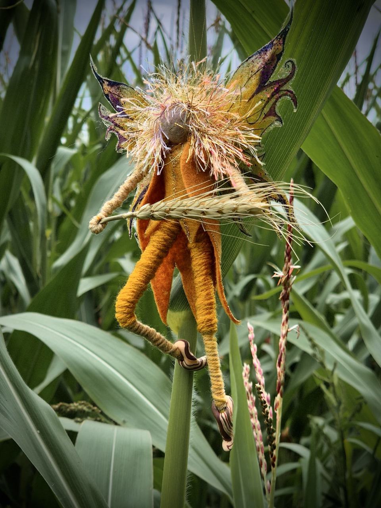

The Faeries
Step into the enchanted realm of Faerie. Each faery carries its own unique spirit and magic, drawn from the folklore and legends of nature itself.

Autumn Fae & Faery
As the leaves turn golden and crimson, the Autumn Fae emerge to celebrate the harvest season. These magical beings embody the transformation and abundance of fall, bringing warmth and gratitude to all they touch. The Autumn Fae remind us to appreciate the beauty of change and the gifts of the season.
Gaia – Earth Faery
Gaia, the Earth Faery, is the guardian of all growing things. Connected to the soil, the stones, and the ancient roots beneath our feet, she brings grounding energy and stability. Gaia reminds us of our connection to Mother Earth and the importance of nurturing all life.
Halloween Fae & Faery
As the veil between worlds grows thin, the Halloween Fae dance through the October nights. These playful spirits celebrate mystery, magic, and the supernatural. With mischievous grins and mysterious eyes, they invite us to embrace the shadows and discover the magic hidden in darkness.
Jack Frost Fae
Jack Frost brings the first freeze of winter, painting the world in crystalline patterns. This chilly character creates intricate designs on windows and adorns nature with sparkling frost. Jack Frost represents the crisp beauty and transformation that winter brings.
Lochie – Winter Fae
Lochie, the Winter Fae, dwells in the deep cold and icy places. A guardian of winter's quiet magic, this fae brings peace in the stillness and beauty in the snow. Lochie reminds us that even in the coldest seasons, there is profound beauty and power to be found.
Marina – Water Faery
Marina, the Water Faery, dances across streams and dwells in the heart of the sea. This fluid and graceful spirit embodies flow, adaptability, and emotional depth. Marina carries the wisdom of the waters and invites us to embrace change and go with the currents of life.
Pan
Pan, the ancient deity of nature, brings wild freedom and untamed magic. With his pipes and mischievous spirit, Pan celebrates the primal forces of nature and encourages us to connect with our wild selves. He embodies joy, liberation, and the call of the forest.
Spring Fae & Faery
The Spring Fae burst forth with new life and renewal. These joyful beings dance among blooming flowers and celebrate the awakening of the earth. They bring hope, fresh beginnings, and the promise of growth. Spring Fae remind us that renewal and rebirth are always possible.
Summer Fae & Faery

Summer Fae bask in the golden light and celebrate the season of abundance and joy. These radiant beings bring warmth, vitality, and celebration to all they encounter. With their bright energy and playful spirit, Summer Fae remind us to enjoy the abundance of life.
Thorn – Thistle Fae
Thorn, the Thistle Fae, embodies protection and resilience. Prickly on the outside yet beautiful within, this fae teaches us about boundaries and inner strength. Thorn reminds us that protection is sometimes necessary and that beauty can exist alongside sharpness.
Willow – Forest Fae
Willow, the Forest Fae, dwells among the ancient trees and groves. Graceful and wise, this fae carries the wisdom of the woods and the gentle strength of growing things. Willow reminds us to stay rooted while remaining flexible and resilient.
Winter Fae & Faery
The Winter Fae celebrate the magic of the cold season with crystalline beauty and quiet wonder. These serene beings bring peace, contemplation, and the beauty of stillness. Winter Fae remind us to slow down and find magic in the quiet, restful times.
Woody – Forest Fae
Woody, a true creature of the forest, embodies the earthiness and strength of ancient woods. This fae is grounded, loyal, and connected to the deep magic of trees and woodland creatures. Woody reminds us to embrace our wild nature and find strength in our roots.